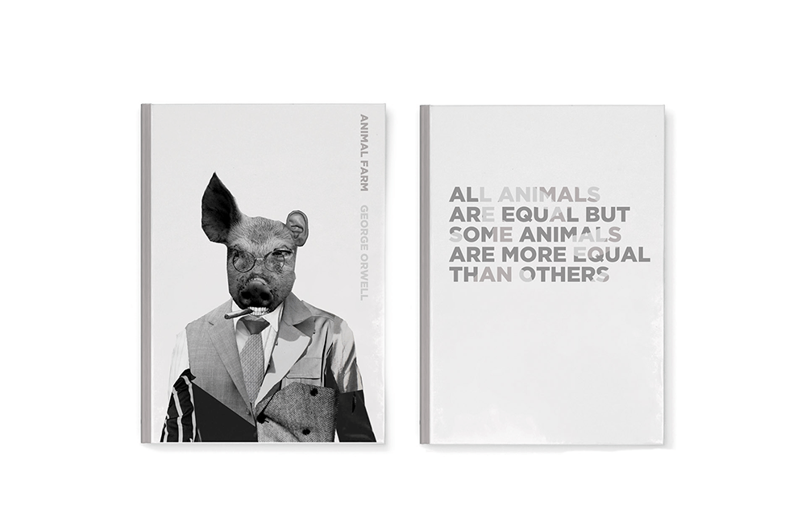
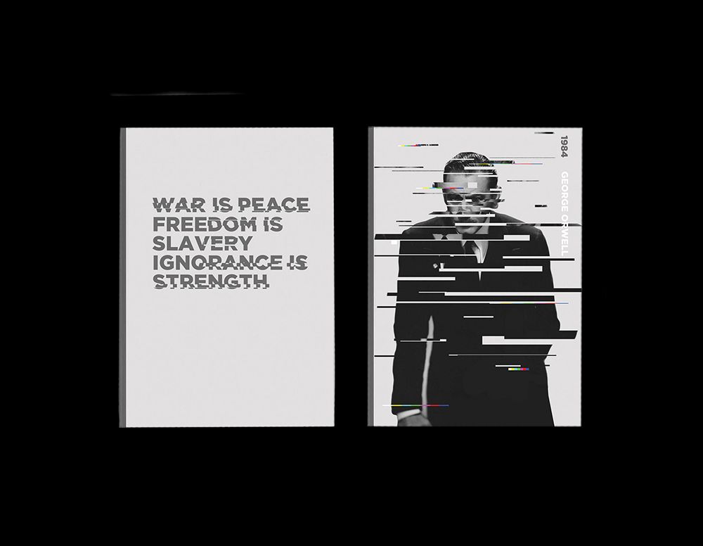
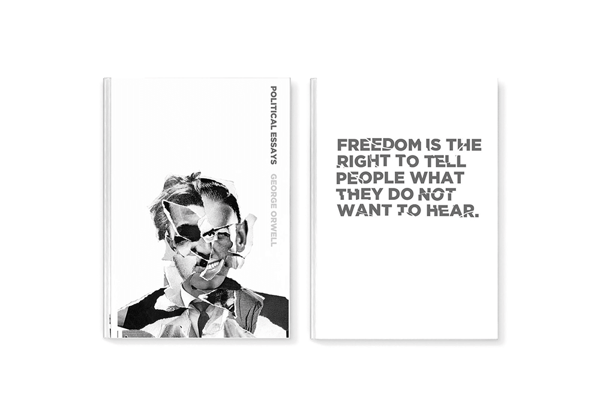

George Orwell Books
Type of Project: Book Cover Design
When: Fall 2015
Student Project
This project was a project done for my Typography 2 class. We were asked to pick three books and design them to act as a set. I decided to go with George Orwell. His books made comentary on corrupt governments, and that inspired me to convey that through this creepy feeling of being watched.


